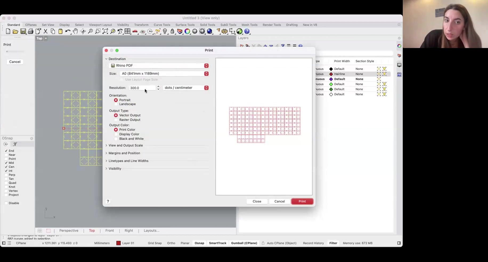

- 激光切割主要使用二维轮廓，先在同一平面绘制。
- 单位与视角在开始时确认，减少导出后的比例错误。
- 新建毫米文档，选择俯视草图平面，确认导航与时间轴。
查看本章原文字幕（自动识别）
Vimeo 自动识别字幕，保留原文，可能存在识别错误。
00:00:03.195 Hi Warren.
00:00:03.805 This is Fabric Academy 2024 25th.
00:00:06.645 This is, um, tutorial on open source circular fashion
00:00:11.285 week number three, and I'll start sharing my screen.
00:00:17.905 Um, begin, um, with the pattern construction, this is
00:00:22.665 what I am aiming to do today with you
00:00:26.065 so we can start working in the real size.
00:00:29.265 Uh, how can interlock pieces together, how we can start
00:00:33.235 designing patterns and modules.
00:00:35.825 Uh, also with a little bit of math, uh, symmetries
00:00:39.725 and relationships between the parts of the model.
00:00:42.205 So, um, I'm gonna, uh, this is fusion.
00:00:46.835 Um, I'm gonna create a new file so we can start over.
00:00:50.395 And this is how basically the interface appears.
00:00:54.075 Um, the first thing, um, to do here, of course,
00:00:59.035 is, uh, going to the top few.
00:01:02.395 Uh, be sure you can see correctly.
00:01:04.835 Um, here, there is a kind of a menu
00:01:07.245 with folders that are clickable.
00:01:09.595 Be sure the units is millimeters.
00:01:12.595 If it's not, you can double click onto the icon, change it.
00:01:17.575 I recommend you to use millimeters and not centimeters
00:01:21.495 'cause you're dealing, um, this during this week
00:01:23.725 with very tiny, um,
00:01:26.975 measurement, uh, with small numbers.
00:01:30.695 Uh, and also be sure here at the very end,
00:01:33.245 there is the icon for the timeline.
00:01:35.375 So whatever you do, um, on the software on this
00:01:39.365 board is gonna be recorded at the end.
00:01:42.145 That means that you can always go back to previous command,
00:01:48.525 admitting people and everything will be,
00:01:52.825 uh, recorded for you here.
00:01:54.425 So, um, I always recommend you
00:01:58.005 to use the mouse if you also want to navigate, uh,
00:02:00.835 different, uh, uh, views of your file.
00:02:04.745 Um, here at the top right, there is a house.
00:02:08.435 So you can always relocate back, um,
00:02:11.285 your design at the center of the grid,
00:02:13.595 or, uh, click on the different phases of the cube here.
00:02:17.035 Um, our design is gonna be flat.
00:02:19.125 It's gonna be printed, so we always work on the top face.
00:02:23.755 Be sure you are gonna face, uh, what you see here.
00:02:27.625 And of course you have commands that are pretty common
00:02:30.425 to different software like the pan.
00:02:32.385 So you can always, um, also navigate, uh, with the mouse,
00:02:37.775 um, back and forth.
00:02:39.775 You have a zoom
00:02:42.795 and you have something very useful
00:02:44.495 that is gonna be, um, fit.
00:02:46.615 I have six fit two windows,
00:02:48.635 so you can always er your pattern,
00:02:52.395 um, to begin with.
00:02:55.015 So what I was showing early is what I'm aiming to do.
00:02:57.895 And, and this is very, very, uh, first minutes.
00:03:01.265 It will not take a while.
00:03:02.625 Um, fusion is very intuitive software, uh,
00:03:05.995 very different from Rhino,
00:03:07.325 but still you can, you might be able to recognize,
00:03:10.705 uh, similar tools.
笔记按章节保存在当前浏览器中。重要内容请自行备份。
- 尺寸约束控制几何大小，而不是只放一个标注。
- 演示采用 50 mm 圆；实际模块尺寸按用途和材料确定。
- 画圆后设置直径，并再次编辑尺寸检查变化。
查看本章原文字幕（自动识别）
Vimeo 自动识别字幕，保留原文，可能存在识别错误。
00:03:12.995 Um, so as we said, we are here on the top face
00:03:16.275 and we begin creating, uh, what Fusion calls a sketch.
00:03:21.485 So our pattern will be a vector, will be a sketch.
00:03:26.445 And in order to create the first command,
00:03:28.565 we just click on on the top icon you see here.
00:03:31.925 So create sketch one, click here one, click on the board,
00:03:36.405 and be sure you see a sketch palette here,
00:03:39.745 a sketch icon at the very bottom of your software
00:03:44.375 and different tools happening here.
00:03:46.655 Uh, you should also be able to see a green button
00:03:49.425 that says Finish sketch.
00:03:50.935 So now you're outside the sketch.
00:03:52.975 In order to modify your pattern, your module,
00:03:56.415 you must enter inside the sketch.
00:03:59.475 So double click you're in, double click or,
00:04:02.925 or click on the button, the green button to go out.
00:04:06.685 So now that we're here, we can create, uh, a module
00:04:11.195 and we have, uh, great choice front of us.
00:04:14.175 Usually everything, uh, starts with basic shapes.
00:04:17.515 Uh, you can pick a circle, you can pick a rectangle.
00:04:21.885 Um, if you're real beginning with the software,
00:04:24.405 you can follow me.
00:04:26.045 Um, if you're experienced,
00:04:28.085 you can just pick any shape you want and create your own.
00:04:33.185 Um, yesterday was showing the circles as a first approach.
00:04:37.465 So I'm gonna replicate that
00:04:39.305 and I'm gonna go click under create
00:04:42.875 and select a circle from the center.
00:04:45.825 There are many options for different polygons
00:04:48.215 that you can insert in your design.
00:04:51.675 Uh, you can only choose if you want your circle
00:04:54.275 to start from the origin from the center rather than 2.3
00:04:58.255 points and so on.
00:04:59.795 So I'm gonna just use the circle
00:05:01.995 and, uh, I'm just clicking on the command.
00:05:05.845 And in order to position it somewhere on the plane here,
00:05:09.465 I must click and specify the point I want it to be.
00:05:13.845 Um, usually you can use the grid that you see here.
00:05:17.925 You have a origin and two access.
00:05:19.985 So, um, for example, you can click in the middle of the grid
00:05:24.345 and specify that it's gonna be also your center.
00:05:27.885 So one click and, uh, second click to release.
00:05:32.645 You can only press, uh, escape from the keyboard
00:05:36.245 to remove the selection
00:05:38.525 and select it, uh, with a mouse with a pointer.
00:05:45.335 It should be, um, it should be blue.
00:05:48.055 Um, so we just picked a circle.
00:05:50.695 We don't know, uh, the dimension.
00:05:52.655 It was just random fusion as, um, a great way to deal
00:05:57.755 with, uh, dimensions.
00:05:59.135 There is under create.
00:06:00.955 Most of the commands you're gonna find useful, uh,
00:06:04.225 for this week will be actually here, uh,
00:06:06.695 under create or modify.
00:06:09.535 So under create or uh, d for the people who refer
00:06:13.445 to your shortcuts in the keyboard, you can create,
00:06:16.825 you can use, um, sketch dimension
00:06:18.985 and click on the edge of the circle of your polygon
00:06:24.415 and click, um, to be able to insert a number.
00:06:29.935 This, as you can see here, is gonna be millimeters.
00:06:32.485 So for example, you can select everything
00:06:35.165 and write, uh, five centimeters.
00:06:39.485 If you want your circle to be, um, smaller,
00:06:42.885 you can just double click anytime.
00:06:44.965 And the, um, size
00:06:47.325 of your module will be adopted accordingly.
00:06:50.945 Um, so let's say 50 was okay.
00:06:54.375 Uh, you can find the command here as a shortcut
00:06:57.495 or again here in sketch dimensions.
00:07:02.595 Um, so this is our first shape.
00:07:05.275 Of course, you can move the dimension, whatever you want.
00:07:08.495 I suggest you to keep it outside
00:07:10.395 to leave the, uh, sketch clean.
笔记按章节保存在当前浏览器中。重要内容请自行备份。
- 构造线用于定位，不应进入最终切割路径。
- 只设置槽长不能固定槽的位置，还需要距离或几何约束。
- 课程演示 10 mm 槽及约 20 mm 定位，连接最终仍需做材料测试。
- 把参考轴改成构造线，给槽长、中心距离与中点关系分别加约束。
查看本章原文字幕（自动识别）
Vimeo 自动识别字幕，保留原文，可能存在识别错误。
00:07:14.155 Um, and we can try to add some cuts like so yesterday,
00:07:18.735 some slots, um, to create a female
00:07:21.555 and a male to be able to interlock between each other.
00:07:25.495 Um, so basically gonna add
00:07:29.545 this kind of connections.
00:07:30.735 We are gonna start with the female.
00:07:33.585 This is a square, but follows the same exact process.
00:07:36.975 So how do we create these parts
00:07:40.965 for the other male part
00:07:42.845 to be interlocked and connected together?
00:07:47.655 Um, the correct way is of course, uh,
00:07:51.145 user agreed to use references.
00:07:52.775 What you can use fusion is, for example, lines.
00:07:58.705 Uh, of course there are count countless ways to do, uh,
00:08:02.345 to create a pattern to do what I'm going to show now.
00:08:06.385 Uh, a convenient way is to use the line
00:08:09.045 that you can also find here, or l in the keyboard.
00:08:12.745 And for example, um, create a reference.
00:08:15.665 So from the center of your polygon to, um, all the way up,
00:08:21.085 keeping straight, uh, you can use escape
00:08:28.495 to remove the command or click somewhere else.
00:08:35.045 Okay, I'll do it again.
00:08:36.275 So I just want to create an access basically.
00:08:39.275 And I'm gonna take the line, click from the center.
00:08:43.785 If you're not sure what you're clicking, you should be able
00:08:48.465 to see a pointer like, uh, across
00:08:52.015 and the center of your board of your,
00:08:55.085 your module highlighted.
00:08:56.385 So place the first point
00:08:59.865 and place the second, uh, whatever you see here
00:09:03.185 before confirming.
00:09:05.185 If you see the, um, the square, a blue square means that,
00:09:08.145 uh, you are actually perpendicular or vertical
00:09:11.975 or horizontal.
00:09:13.835 You don't have to hold shift.
00:09:15.535 Fusion is, uh, say smart enough to understand, uh,
00:09:19.355 let you know that you are going exactly straight.
00:09:23.915 Um, when you're done, you see this icon, you can confirm
00:09:27.155 and your line is being created.
00:09:29.875 Um, you should be able
00:09:33.925 to see this catch palette.
00:09:37.145 You can, uh, if it's, um, collapsed, you can just click
00:09:40.385 and expand the different command.
00:09:42.705 Uh, this is useful if you want, uh, to give relationships
00:09:46.785 to, um, different lines and parts of the module.
00:09:50.545 But also, for example, you can specify that this
00:09:53.755 line is not part of the construction
00:09:56.025 and is actually, um, an access.
00:09:59.345 So you should be able to see it.
00:10:00.905 Uh, with dotted lines, we're just creating a reference.
00:10:07.055 This is useful because if I want to create this kind
00:10:09.905 of slots, I can just use, uh, I don't have to create all
00:10:13.465 of them, uh, separated, but I can just create one
00:10:17.125 and use, uh, something called the circular pattern
00:10:21.155 to create an array of the same line.
00:10:24.425 So, for example, I can proceed to create the first lot
00:10:28.345 and uh, I have plenty also commands here to use.
00:10:31.445 I can just go again with the line.
00:10:35.005 I can place it anywhere, confirm the selection,
00:10:40.845 click on the, uh, dimension
00:10:43.735 or here sketch dimension, select the line
00:10:48.835 and just put a number.
00:10:50.315 So for example, I want this to be, uh,
00:10:53.235 10 millimeters, one centimeter.
00:10:55.975 And as you can see here, I just assigned the value
00:11:00.255 to the line and I'm actually able to move it anywhere else.
00:11:03.935 So I want it to be exactly at a specific, for example,
00:11:08.895 um, distance between the center.
00:11:12.905 So I can always, uh, let's say lock it down
00:11:17.255 with the dimension command as well
00:11:19.205 and specify two different points.
00:11:21.325 So I can go back to the sketch dimension either here again
00:11:25.485 or down and click two different points.
00:11:30.775 And say, for example, this gonna be,
00:11:34.965 um, two centimeters.
00:11:42.095 Now I'm able to move this way back and forth.
00:11:45.135 But, uh, since we created Anxi
00:11:47.315 before, the aim was to put, uh,
00:11:51.375 to center line, the line to the module.
00:11:54.705 So, uh, you can see here on top there is an array
00:11:58.485 of constraints and these are just, uh, icons
00:12:02.255 that you can select in order to apply a constraint,
00:12:05.335 a relationship between, again, different lines
00:12:08.395 and different parts of the modules.
00:12:10.035 So what I want to lock down is this line
00:12:15.235 and put it in the middle, um, of the axis here.
00:12:19.275 So I'm gonna select the line holding, shift the axis,
00:12:24.805 and I'm gonna choose between the constraints.
00:12:27.165 Uh, midpoint, uh, if you zoom in a little bit,
00:12:32.105 you see that there is an icon.
00:12:34.405 Um, there's a triangle, identifies the midpoint.
00:12:37.605 So now I'm not able to move, uh, my line
00:12:42.665 in any direction between,
00:12:44.115 because it's been, uh, locked down here.
00:12:46.825 So it's exactly where I want it to be.
00:12:49.445 I can of course update the measurement
00:12:52.545 and now we can see that it was, uh, equally both size.
00:12:56.845 I can even put, uh, 40,
00:13:00.765 I can do z.
00:13:03.025 Uh, let's skip it. 10.
00:13:04.305 And again, here I can only specify
00:13:05.905 the distance between the center.
00:13:08.505 Um, and the point, I can put 25
00:13:12.975 and clearly it's gonna be outside of the module
00:13:20.275 10 is gonna be furthermore inside,
00:13:24.575 but I think 20 was a good number to start with.
笔记按章节保存在当前浏览器中。重要内容请自行备份。
- 阵列中心应与模块圆心一致。
- Finish Sketch 后需重新进入草图才能修改内部几何。
- 导出后要检查辅助几何和重复路径，文件成功保存不等于已可切割。
- 设置圆心与槽阵列数量，改变一次数量再检查几何。
- 保存草图 DXF，并在后续软件中检查比例与多余线。
查看本章原文字幕（自动识别）
Vimeo 自动识别字幕，保留原文，可能存在识别错误。
00:13:28.155 So once I did this, I can select my line
00:13:33.395 and actually create a pattern.
00:13:36.235 Of course, I could actually mirror it since I have an, uh,
00:13:41.195 an access here, I could actually use the access of the grid.
00:13:44.555 But I think, uh, in this case,
00:13:46.155 the circular pattern is just more convenient.
00:13:48.315 So the moment I just select the line, I'll do it again.
00:13:54.145 And I'm going to choose the command circular pattern.
00:13:59.355 This popup will come,
00:14:03.785 it shows one selected because I selected the line first.
00:14:07.265 It can always, um, delete the selection
00:14:10.265 and choose the object you want to pattern.
00:14:12.705 And a center, the center point, I can use the one
00:14:16.655 of the grid, or in this case the circle
00:14:20.255 and create a pattern.
00:14:21.855 So how many slots I want to be present in my module.
00:14:27.385 And of course, uh, I think you got now the logic of fusion.
00:14:30.905 So even though I specify I want to
00:14:34.685 before, I can always go back and update time.
00:14:37.705 The number, so from four i one, six
00:14:42.795 rate, or just three.
00:14:49.685 And this is the icon of the pattern of the circular pattern.
00:14:54.955 So let's say four.
00:15:00.265 And basically this can just be considered a module.
00:15:05.045 If I'm happy with what I did, I can just finish this sketch.
00:15:09.725 And, uh, of course, for example, exported as the xf
00:15:16.205 or nesting to put into another software.
00:15:18.845 If I want to modify this design, again, I just double click
00:15:23.315 again, either here on my sketch
00:15:25.325 or down in the timeline here.
00:15:28.425 If I actually double click on the name,
00:15:31.805 I can call it circle female.
00:15:36.395 Double click to enter the selection.
00:15:38.595 And if I don't want any line,
00:15:41.535 'cause I have some access, for example, I can just decide
00:15:45.555 to trim all the lines.
00:15:47.055 I don't need to be in the design.
00:15:50.705 Uh, the dimensions, they don't really matter.
00:15:52.875 They will not appear in the final DXF.
00:15:59.715 Uh, the moment you specify different relationships
00:16:02.365 between the parts, uh, it's always, uh, a good practice
00:16:05.875 to keep the access at any construction lines you have.
00:16:10.545 Just, uh, if you export the final, you can, uh, for example,
00:16:14.175 me, I I would leave everything here, constructed infusion
00:16:18.335 and then moving, for example,
00:16:20.025 onto illustrator to handle battery.
00:16:22.175 The nesting part, I will just get rid of the line, uh,
00:16:25.355 before parting the whole circles.
00:16:29.385 Um, I dunno if it was clear. Uh, there is question on this.
00:16:33.545 So there is something, I was too fast
00:16:36.085 'cause I would like to create the other part,
00:16:38.785 but if you have question about it, you can unmute
00:16:41.785 and uh, let me know.
00:16:57.375 Okay, I can consider it was quite clear.
笔记按章节保存在当前浏览器中。重要内容请自行备份。
- 复制后检查参数和约束关系，删除轮廓可能影响原约束。
- 凸件头部、颈部和槽长需要配合；尺寸是否保持取决于材料和装配方式。
- 讲师用镜像、修剪和阵列演示快速探索，并非完成了所有强度验证。
- 把凸凹连接叠放比较间距，先制作少量测试件。
- 删除导出中的参考线和重复线，再保存独立文件。
查看本章原文字幕（自动识别）
Vimeo 自动识别字幕，保留原文，可能存在识别错误。
00:17:00.405 So we have our female,
00:17:02.365 we can create the second one for interlocking.
00:17:08.045 Again, you have plenty of options.
00:17:11.345 Uh, one of those is, uh, again, you go back to the,
00:17:15.865 to the same sketch for example, you can select everything
00:17:19.265 and you can copy paste it,
00:17:24.085 Contra C, contra V,
00:17:25.485 or if you press, um,
00:17:30.335 removing, you're actually able to create a copy
00:17:34.625 from the option here and you can move it wherever you want.
00:17:41.935 So now this is a copy
00:17:43.575 and both of the designs, um,
00:17:45.995 shouldn't be related to each other.
00:17:48.095 So if I change the first one, the second, uh,
00:17:52.625 design I have, it's like independent.
00:17:55.965 So I can use the first circle I made
00:18:00.685 to be my female and this new one for the male part.
00:18:05.165 So how we can, um, in a matter
00:18:08.905 of seconds also create this, uh, uh, parts
00:18:13.945 that are gonna be designed to go inside
00:18:17.965 and lock my shape perfectly.
00:18:23.485 Again, you have plenty of options.
00:18:26.265 Um, a general rule, uh, when we release a cut fabric
00:18:30.925 and redesign connection, for example, for new premium,
00:18:33.965 but also felt is to keep, um,
00:18:38.775 the same tolerance and let's say the same measurements.
00:18:43.905 So, um, I can use the line
00:18:49.045 and keep this force lots I design in a designed
00:18:53.115 earlier as referenced.
00:18:55.215 So this means that if you look
00:19:00.795 at the male part, the distance between this kind of arrow
00:19:06.125 is the same as this slot I created before.
00:19:11.055 If the females lot is bigger than the male part,
00:19:17.015 basically your connection is not gonna hold.
00:19:21.895 That means that the male part should be equal
00:19:24.805 or a little bit bigger than the female.
00:19:30.605 So, uh, in order to create this part, I can take the line
00:19:34.025 for example and just select
00:19:37.685 place the first point here
00:19:41.085 all the way to the circle.
00:19:43.975 And this is the line I created.
00:19:48.345 Of course I could, now that I have an axis mirror it,
00:19:55.785 uh, all the commands are basically here.
00:19:58.305 So under create I select mirror.
00:20:01.845 I have a mirror line that I can use
00:20:04.425 and I can already see, um,
00:20:06.465 before confirming the selection that I have a preview.
00:20:10.185 So again, I select the mirror
00:20:12.075 line and I confirm.
00:20:17.135 So now you see more icons.
00:20:18.555 These are the icons that specify
00:20:20.545 that the mirror command has been applied.
00:20:24.065 Uh, if these amounts of icons are bothering you,
00:20:27.305 you can just, uh, um, go back
00:20:30.665 and create manually with the line
00:20:37.945 The second one.
00:20:40.205 But the moment you want to specify relationships
00:20:42.305 between all the parties, a good practice to use, uh,
00:20:45.225 to design ones and use all the different commands to pattern
00:20:48.905 to create array, uh, meter and so on.
00:20:51.625 So I'm gonna do it again.
00:20:53.005 I take the line from this point to the circle.
00:20:57.645 Um, if you press base bar in the keyboard,
00:21:01.085 you actually have access to the previous command
00:21:04.245 or you can find all them here
00:21:07.365 and um, still with the mirror.
00:21:09.685 So this line, the mirror line here,
00:21:14.055 and I have them created.
00:21:17.705 Uh, again, I said if we don't want the construction lines,
00:21:21.665 um, to be part of the design, for example, a females lot,
00:21:26.105 we can just get rid of them.
00:21:30.655 We trim or delete, we keep the access
00:21:33.635 because we use for the mirror.
00:21:36.365 And now we have these two lines
00:21:39.215 that we can pattern, for example.
00:21:41.405 So we have the references here, we can do, um,
00:21:44.895 basically go back to the same command.
00:21:47.085 So create a circular pattern, a standard point.
00:21:53.225 And again, this 3, 4, 6,
00:21:57.115 since we have four slots, um, designed earlier for the fema,
00:22:00.545 we're gonna create also for repetitions here.
00:22:07.745 And this is basically how um, your models will be connected.
00:22:12.345 You can always, um, select everything, click,
00:22:17.245 move, and see how your design is gonna overlap.
00:22:21.865 So for example, if you move both of them onto illustrator,
00:22:24.505 you select onto to different colors, you apply some opacity,
00:22:28.505 you're actually able to already preview, add, intersect
00:22:32.985 before printing,
00:22:38.065 uh, for the nesting part of course.
00:22:40.465 So you can do this infusion,
00:22:42.185 you can even move them onto another layer onto,
00:22:45.405 onto another sketch.
00:22:47.745 Uh, but I would like to show some illustrator integration
00:22:50.885 of different software.
00:22:51.955 Then I can just do finish the sketch.
00:22:55.105 Of course I can save it either on the cloud
00:22:58.355 or on on my laptop.
00:23:04.975 These are not female, these are female male.
00:23:07.705 Now, uh,
00:23:11.935 five centimeters and I can just do save as the itself.
00:23:21.035 And yeah, here I have two access.
00:23:23.295 Well basically if I want, I can just get rid
00:23:26.015 of them if this is my final pattern.
00:23:28.755 So I can double click again, uh, enter the sketch mode
00:23:33.115 and just stream the axis.
00:23:35.475 Otherwise I have to train the administrator.
00:23:55.295 Um,
00:24:11.835 um, is there any questions so far?
00:24:26.555 Okay, no, uh, we can continue.
笔记按章节保存在当前浏览器中。重要内容请自行备份。
- 导入时核对 1 个单位对应 1 mm，再用已知尺寸测量。
- RGB(255,0,0) 与约 0.01 mm 的细描边是本次设备流程示例，不是通用激光功率设置。
- 无填充与细描边适合检查切割路径；显示用填色需与加工文件区分。
- 设置画板为材料或加工床尺寸，导入后检查尺寸与构造线。
- 向所在实验室确认颜色、线宽与驱动要求。
查看本章原文字幕（自动识别）
Vimeo 自动识别字幕，保留原文，可能存在识别错误。
00:24:33.915 Um, okay, I hope, uh, you can see, um, illustrator here.
00:24:42.135 So basically we can, uh, um, create a new document.
00:24:47.245 If you know in advance, um,
00:24:51.465 the dimensions of your textile piece
00:24:53.985 or the bed of the laser that you can directly, uh,
00:24:58.105 use the dimensions, um, you have at your hand.
00:25:03.445 You can change 'em from here.
00:25:04.885 Be sure also you are dealing with millimeters.
00:25:07.965 You can specify the number of art boards.
00:25:10.965 Uh, be sure the color mode set up is LGB
00:25:15.565 and um, you're ready to go.
00:25:17.565 Of course you can always change your
00:25:20.285 canvas dimensions later on.
00:25:22.405 And this is the icon illustrator to do that
00:25:28.955 we saw a little bit last time.
00:25:30.645 Also, uh, how illustrator works. Um, it handle vectors.
00:25:35.835 So, um, here is the, one of the best software,
00:25:40.815 let's say also very intuitive to, uh,
00:25:43.175 create nesting, but also a pattern.
00:25:45.675 You don't have to use fusion, you can use rhino
00:25:48.315 or any other software you're comfortable with.
00:25:51.995 I think an illustrator is very easy to create, uh,
00:25:56.965 um, symmetries to create pattern as well.
00:26:00.765 It just a little bit more tricky to work in real size.
00:26:05.205 Uh, you don't have plenty of options
00:26:07.045 to establish relationships in the parts of the modules,
00:26:10.565 but of course also you have, um, rulers
00:26:14.565 if you do not see them, uh, like me in this case,
00:26:17.565 you can enable from view
00:26:23.415 and you can find the command here
00:26:25.455 or command r ctrl r keyboard
00:26:28.815 and show this, uh, magnetic rules
00:26:33.225 that you can just drag and drop it anywhere
00:26:36.815 and delete if you don't need anymore.
00:26:39.215 So what are
00:26:41.055 or trying to do here is to, uh,
00:26:45.585 organize the models altogether.
00:26:48.425 I can import from file, for example,
00:26:53.085 and the circles that we just created
00:26:57.135 or I can just open them,
00:27:03.435 um,
00:27:12.185 or convenient.
00:27:15.615 Uh, drag and wrap inside.
00:27:19.475 I had the previous one. Okay,
00:27:32.915 circle, uh, the moment to import
00:27:37.035 or your open your file.
00:27:38.325 Also be sure its says original size and the scale.
00:27:42.675 One unit correspond to one millimeter inside.
00:27:47.535 So this is how uh, your design should be appearing.
00:27:51.595 Be sure every time you change software
00:27:53.815 there is no double line.
00:27:56.485 So the moment you click on one line sheet,
00:27:58.805 see only one moving.
00:28:02.585 And here again, a circle and not space between each other.
00:28:06.305 The first thing to do usually is to create groups.
00:28:08.905 So you can move one element, um,
00:28:12.555 with all the different lines together.
00:28:15.185 To do so, you just select all the lines you want
00:28:19.985 to be part of the group.
00:28:21.665 And then you can say in the keyboard, CTL G,
00:28:26.415 command G or you should be able to see
00:28:31.335 this bar a little bit down that says group or ungroup.
00:28:38.615 So you should be able to move everything in one go.
00:28:42.605 Uh, fusion also has this, um, candle snaps.
00:28:45.885 So you can always see when the two shapes are aligned
00:28:49.225 between each other when they should point this kind
00:28:53.115 of magnetic rules,
00:28:55.615 or, uh, if you want to be sure these two shapes are aligned,
00:28:58.735 you can select for example, uh, there like this, let's say
00:29:03.895 you can select both of them
00:29:05.495 and use, uh, one of the alignment tool
00:29:08.275 that you see on top here.
00:29:09.495 So example in this case would be perfectly center aligned
00:29:15.605 in this case of course will be overlapped and so on.
00:29:20.445 Again here you can choose if you want them to be aligned
00:29:23.335 to selection or to the board.
00:29:26.825 That means in this case here on top
00:29:31.505 of your cameras, uh,
00:29:34.795 let's say they're fine like this center aligned.
00:29:37.485 So I can also move them together because I select them both.
00:29:42.095 And in order to laser cut this, I need to set up,
00:29:45.575 for example, the color we say we are in RGB mode.
00:29:50.705 It's also written here if you're not sure.
00:29:53.295 So on top of your um, file, it's written, uh,
00:29:56.875 the color space, double click on the color.
00:30:01.845 Be sure to enable only web colors
00:30:04.325 and find the red 2 55, 0 0.
00:30:11.765 You should also be able to see the color on top
00:30:14.165 and also multiple other locations here on the board.
00:30:22.685 Of course, it's not mandatory to use red.
00:30:24.485 You can use any color you want as long
00:30:28.745 as it is, uh, RGB.
00:30:33.465 Um, the other parameter to set up is the stroke.
00:30:37.345 So as we were saying, usually the resolution
00:30:39.485 of delays is 0.01 millimeters
00:30:42.945 or in some software you can use the option hairline
00:30:47.955 and it's normal that your line becomes very, very thin.
00:30:51.355 So just zoom in and be sure, um, your file is still here
00:30:55.635 or if you press common Y on your keyboard,
00:30:58.795 you're actually able to see the x-ray of your design.
00:31:08.385 You can move it very close to the board.
00:31:10.505 And uh, we have a male and the female here.
笔记按章节保存在当前浏览器中。重要内容请自行备份。
- 重复变换复制的是前一次移动关系，先确认首对模块的间距。
- 排满一行后可整体复制到下一行。
- 组合预览中的填色和透明度服务于观察，不应直接替代加工路径设置。
- 排两件确认边界与间距，再重复整行和整列。
- 把预览版本与切割版本另存。
查看本章原文字幕（自动识别）
Vimeo 自动识别字幕，保留原文，可能存在识别错误。
00:31:14.025 We can for example, start partnering, uh,
00:31:18.875 copying the circles all over.
00:31:22.045 Uh, again, there are so many commands here to do
00:31:24.625 that we can, uh, for example, select both of them
00:31:28.245 and uh, was showing this when also two weeks ago.
00:31:32.245 So if you press on your keyboard, uh, alt
00:31:36.635 or option on the Mac, you should be able to see this cloning
00:31:41.855 icon next to the pointer.
00:31:46.275 And you can just, uh,
00:31:47.915 or shift drag it
00:31:53.965 Central aligned until you meet, uh, the point
00:31:58.765 of the other circles.
00:32:00.445 And then if you press command D should be able
00:32:03.665 to replicate this one, um, as much
00:32:06.425 as you want onto it.
00:32:10.735 Also, uh, you undo all the steps.
00:32:13.405 So again, you can select both of them.
00:32:21.145 You can of course copy paste them,
00:32:22.945 but like this, it's much faster.
00:32:25.185 So option in the keyboard, you should be able
00:32:27.925 to see this icon.
00:32:29.305 And before clicking or shift
00:32:32.665 and create your clone, your first two module,
00:32:37.535 then Ctrl D you can can create, uh, more
00:32:42.555 cloning control D
00:32:43.865 or command D basically just uh, repeats the last command
00:32:47.025 and then you can select all the row and do the same thing.
00:32:50.985 So optional alt in the keyboard,
00:32:55.575 which shift your, keep the alignment
00:32:59.585 and the points you touch.
00:33:02.275 It's totally fine
00:33:10.325 And you keep going.
00:33:14.725 I was in the X-ray mode in, uh, common y
00:33:19.145 control Y in the keyboard.
00:33:20.615 So if you want to be sure your design is here,
00:33:23.175 of course you can also, um, reverse
00:33:27.855 apply the field instead of the stroke.
00:33:33.295 You can double click on the stroke, apply a color,
00:33:39.985 white or black.
00:33:44.045 And I was saying you can also see in advance
00:33:47.165 how the models basically interlock between each other,
00:33:52.665 not for the nesting clearly.
00:33:54.305 But uh, if you want to create this kind of guidelines
00:33:57.275 that you cannot add, uh, um, to the big documentation,
00:34:02.225 you can give some, uh, transparency, some, a example 60%
00:34:08.585 and you can see how the pattern will
00:34:13.555 look like with
00:34:18.415 the same command we showed earlier.
00:34:20.445 Control, uh, shift.
00:34:22.835 We can move this one all over
00:34:26.355 and see a new design, um, appearing.
00:34:35.005 This is just for a simulation
00:34:38.855 and uh, again, you can select everything.
00:34:42.845 Um, double click or specifying.
00:34:46.085 We don't want any field to be applied to our models.
00:34:49.005 And the stroke has to be, in this case red,
00:34:53.995 RGB or green
00:34:55.855 or blue to 50 50 0 0.
00:35:02.765 And of course, if some pieces don't fit,
00:35:04.925 we can always remove them.
00:35:06.605 We can make a group control G or here at the bottom.
00:35:11.165 So now we can move our selection
00:35:13.955 and we are able to rotate it to split it
00:35:18.645 and ate our, uh, other boards.
00:35:20.925 So of course if I want another board to be ready
00:35:23.485 for cutting, I can either send the same file
00:35:27.805 or create a copy.
00:35:29.925 So clicking on the R board dimensions
00:35:33.205 and the same command press, alter option shift
00:35:36.485 and I create a second one.
笔记按章节保存在当前浏览器中。重要内容请自行备份。
- 圆形密排仍留下空隙，可利用负空间设计另一个模块。
- 先切少量验证连接，避免整个画板失败。
- 导出后检查选择范围、单位和路径，不把位图预览当作矢量加工文件。
- 计算材料利用并绘出留下的负空间。
- 先保存并试切少量，再导出最终排料。
查看本章原文字幕（自动识别）
Vimeo 自动识别字幕，保留原文，可能存在识别错误。
00:35:45.495 Um, we have been speaking yesterday, uh, mostly about te
00:35:50.935 and uh, of course there are just three, uh, main shapes
00:35:55.115 that allows you really to escalate a shape on the board.
00:35:58.815 As you can see here, especially if you reverse this
00:36:02.195 election, um,
00:36:06.075 the board is as some waste.
00:36:09.555 When you have shapes like circles, you have, um, a choice.
00:36:13.065 For example, you can, uh, decide to use the space in
00:36:17.575 between, uh, creating a new model.
00:36:19.595 So for example, creating, um,
00:36:23.505 different connections.
00:36:38.005 So applying either an illustrator
00:36:39.925 or so on fusion, um, the same slots.
00:36:43.825 So this piece also becomes part of a pattern
00:36:57.815 Or try to expand, for example, the shape.
00:37:08.815 Um, yeah. So let's continue.
00:37:17.335 Let's go back to our red. Um, zero zero.
00:37:23.265 Uh, we're always able to also dimension the board.
00:37:26.545 We have,
00:37:30.785 let's say this is our final.
00:37:32.235 So we select everything Control a common A,
00:37:35.995 we put back 0.01 millimeters or airline.
00:37:40.665 And um, we're basically done for laser cutting.
00:37:44.065 We can generate our first modules.
00:37:47.105 Of course, the first step would be always, um, to test
00:37:52.155 a couple of them first before sending, um, the full sheet.
00:38:00.585 And the workflow is the same.
00:38:01.945 You can just save it as um,
00:38:07.405 PDF,
00:38:11.425 S-P-G-A-P-S, all of them are vector format.
00:38:18.545 And you can keep the default settings.
00:38:27.115 And when you're done, you should be able to see
00:38:29.855 the moment you zoom, your file is ready.
00:38:38.715 Uh, I would like to move to Rhino.
00:38:42.495 So if you have some questions about Illustrator,
00:38:45.335 you can also unmute yourself.
00:38:47.335 Now
00:38:55.565 you can stop share for one second
00:38:57.725 and can gimme some feedback if it's too slow,
00:39:00.625 if it's too fast,
00:39:06.965 if something is not clear.
00:39:09.805 I dunno the level of everyone.
00:39:18.215 I think that everything is good.
00:39:20.315 And, uh, the explanation is very clear.
00:39:22.635 The thing that we need to, uh,
00:39:24.775 practice this like work on our own, uh, files
00:39:27.995 to make our own files.
00:39:29.275 And, uh, in this case, maybe we'll have more questions.
笔记按章节保存在当前浏览器中。重要内容请自行备份。
- 材料厚度、柔软度与切缘会改变实际连接。
- 叠层与填充可以让平面模块产生立体形态。
- 同一几何在不同材料上需要重新试验。
- 拍摄连接正反面，并记录厚度与装配顺序。
查看本章原文字幕（自动识别）
Vimeo 自动识别字幕，保留原文，可能存在识别错误。
00:39:33.805 Okay, so we can move to Rhino.
00:39:35.995 We see different approach
00:39:37.195 and we try another pattern, which is more,
00:39:39.705 makes more sense for the sation.
00:39:41.495 That is gonna be based on a square.
00:39:43.275 So was trying to do
00:39:45.785 and do, this ones
00:39:50.275 exactly the module source.
00:39:51.745 So good exercise, if you have this kind of configurations
00:39:54.505 and modules in your is for example, understand how, uh,
00:39:59.305 the big piece is made, try to deconstruct them, try to, uh,
00:40:04.265 create again this one with scissors and paper
00:40:08.145 and try to create different patterns
00:40:10.405 that also could use this locking
00:40:13.085 systems as the ones that you have.
00:40:15.305 Or try to understand how a pattern
00:40:18.335 that is being generated also from an image can be, um,
00:40:22.775 through a series of shapes, lines can be created again,
00:40:27.445 uh, and vectorized.
00:40:30.205 So let's start simple again. And we can do this one.
00:40:33.445 And again, here we have a female
00:40:36.005 and a male as slightly different than the previous one.
00:40:40.695 But still, uh, we can identify
00:40:43.595 that follows the same exact approach.
00:40:47.115 These are the male parts.
00:40:55.805 And of course, for example, there are multiple ways.
00:40:57.855 Even though you have just four slots, the moment you start,
00:41:01.525 uh, adding slots, you have way multiple, uh,
00:41:05.245 way more ways also to, uh, interlock your modules.
00:41:10.775 Uh, if you want to go 3D usually the way is
00:41:13.775 to stack the pieces on top of each other.
00:41:15.655 So also this way you can just insert this kind of arrows
00:41:21.415 inside and you have a module that is a little bit more 3D.
00:41:29.715 But in this case, since you're using the first lot, uh,
00:41:33.715 ready for the interlocking of this module, you can
00:41:37.135 have way more here to be used
00:41:41.835 to grow this.
00:41:43.385 Uh, and if you have this kind of modules, uh,
00:41:48.145 becoming 3D, uh, since uh, felt something very thin
00:41:53.945 and foldable, you can always think
00:41:55.605 of adding something inside.
00:41:57.315 Like, uh, when not shall we, maybe you have the,
00:42:01.485 the sample we did in Armenia,
00:42:03.185 we were actually putting wool inside.
00:42:05.485 So we had something that was really, um, popping out.
00:42:11.685 Yeah, what is the thickness of your pieces?
00:42:16.635 No, this is, uh, around two millimeters.
00:42:23.205 It hold very well the connection,
00:42:24.785 especially if it's not very small.
00:42:28.155 Uh, the other piece I have here is also very nice
00:42:32.795 and this is, uh, uh, velvet.
00:42:52.025 And the one I had
00:42:53.045 before, uh, was actually used to construct a bag.
00:42:56.465 So there was a bigger piece that was actually,
00:43:00.755 um, versatile.
00:43:04.175 So was becoming 3D.
00:43:05.455 You can use it in multiple ways
00:43:07.095 or so forth, a shoulder piece.
00:43:12.025 So again, there are many modules that are able to, um,
00:43:16.035 develop into the third dimension.
00:43:18.825 Uh, let's go back to rhino.
00:43:21.455 'cause we have still a couple of things to do.
00:43:24.915 Uh, so the moment you launch Rhino, uh, we can do it again.
00:43:29.275 We can open, sorry,
笔记按章节保存在当前浏览器中。重要内容请自行备份。
- 循环性需要看材料来源、使用寿命和后续路径，不能只凭新旧判断。
- 边角料可以缩小模块尺寸，但连接槽与保持结构仍要重新测试。
- 其他再利用方法有价值；本次课程作业还要求记录数字制造和激光试验。
- 说明选择材料的原因与使用后的路径。
- 把纸样探索和正式材料测试分别记录。
查看本章原文字幕（自动识别）
Vimeo 自动识别字幕，保留原文，可能存在识别错误。
00:43:31.415 I raise my hand, but I think you can't see me,
00:43:33.975 therefore I interrupt you.
00:43:35.835 I'm really sorry. Uh,
00:43:37.455 I have a question about the, uh, pieces.
00:43:39.995 You know, uh, based on what we are thinking about the, uh,
00:43:44.735 circular fashion, maybe we need to use waste materials
00:43:47.915 or, uh, I don't know any other materials which is not,
00:43:52.875 uh, completely like, uh, the new one or raw materials.
00:43:57.325 Therefore, uh, if we want to, uh, obey these rules that, uh,
00:44:01.715 we, uh, made a special, uh, cut for each material,
00:44:06.665 maybe we couldn't, uh, manage it.
00:44:08.815 Because if we want to use, uh, waste materials,
00:44:12.505 maybe we don't have any enough, uh,
00:44:15.175 materials in a special dimension
00:44:17.075 or even, uh, you know, uh, to be honest,
00:44:20.615 I it seems it is not really a circular, you know, I mean,
00:44:24.195 uh, it seems you, uh, for example, you use a velvet fabric,
00:44:29.025 which is totally not waste
00:44:31.105 and, uh, try to cut it in a special models, you know,
00:44:34.965 to be honest, it is in conflict with the approach of, uh,
00:44:39.355 recycling, you know, or circular fashion
00:44:41.875 because, um, in my, uh, mind I think we need
00:44:45.605 to use waste materials
00:44:47.425 or, um, you know, some materials which is not usable in our,
00:44:52.545 um, you know, routines.
00:44:56.725 Yeah, yeah. What you say Pedro?
00:44:58.355 And, uh, what we have been saying that prototyping is, uh,
00:45:01.295 pretty se very unsustainable.
00:45:03.725 This is still a learning process.
00:45:05.675 Uh, they were saying also yesterday,
00:45:07.855 whatever works on textile works on paper,
00:45:10.975 paper is at least a hundred percent recyclable.
00:45:14.305 We also have recipes for creating your own paper.
00:45:17.905 So, uh, you can use any material you have at your hand
00:45:21.425 and, um, maybe starting with small pieces,
00:45:26.825 the small pieces can be cut and, um,
00:45:30.495 and most of the materials are no.
00:45:31.955 So if you have scraps, you can try to identify
00:45:34.375 to measure the idea you have of the materials.
00:45:37.475 So either if you have 20 centimeter might be enough
00:45:41.195 for you to create a module.
00:45:43.575 You know, I need to know, uh, if it is mandatory to, uh,
00:45:47.215 cut it with laser cutter or something like this.
00:45:50.035 Because for example, I'm thinking about the, um,
00:45:53.495 filter cigarette filters.
00:45:55.695 You know, it is not possible for, uh, I don't know,
00:45:58.595 laser cutting or something like this,
00:46:00.535 but it is possible for using in, uh, recycling.
00:46:03.995 Therefore, I ask this question, I need to know, uh, some
00:46:07.555 of these rules is mandatory for us or not.
00:46:10.615 We can do our, um, create,
00:46:14.135 use our creativity in this way.
00:46:18.165 Um, maybe you can save this idea for later,
00:46:21.005 for other weeks, but yes, the week focuses on
00:46:23.065 the use of the laser cut.
00:46:25.345 So it's, uh, kind of mandatory to use the, the laser, thank
00:46:29.525 You, thank, but Against using, uh,
00:46:31.945 or it's impossible for you to get, uh, some materials.
00:46:35.665 Uh, you can always, you know, um, even if you buy some felt,
00:46:39.625 you can reuse the felt also in many other weeks
00:46:42.505 for other things or drying the paper as well.
00:46:46.885 Um, yeah, and really they,
00:46:50.615 um, recycle it.
00:46:52.705 Yeah, yeah. Good.
00:46:54.775 No worries about that. You're, you're learning.
00:46:56.735 So, uh, whatever is, is needed to learn.
00:47:01.285 Mm-Hmm. It's not a waste. Okay.
00:47:05.045 Okay. Thank you very much. Thank you for
00:47:06.615 Explanation out of this, the,
00:47:09.115 we have a weak Texas scaffold
00:47:10.625 where you can use different layers that you use
00:47:14.735 for the learning process and then combine them with the rein
00:47:17.955 and create, um, hard objects instead of soft, okay?
00:47:22.255 You're going have plenty of ideas
00:47:23.915 to recycle all the different assignments you'll be
00:47:26.815 creating in the six months.
00:47:29.555 Okay, Thank you. Thank you very much. No problem. Uh,
00:47:32.975 Sorry, can I add something?
00:47:35.035 Um, because sometimes we use also the leftovers,
00:47:38.995 and to have this small pieces, it gives you the possibility
00:47:42.435 to really use those leftovers
00:47:44.595 and there so you can scale your, um,
00:47:48.605 your parts so you, it can fit, uh, your leftover,
00:47:53.555 for example, the leftover of the leather of different,
00:47:56.795 uh, textiles.
00:48:02.265 Yeah. You know, the moment you have a, a vector file,
00:48:10.335 you can just select everything
00:48:12.055 and scale down of course.
00:48:16.715 So just, uh, be sure that you are measuring
00:48:22.955 also the, um, your slot.
00:48:26.105 An illustrator is a bit tricky,
00:48:27.785 but you can always either with the rules
00:48:30.025 or double clicking on the segment.
00:48:33.265 And here, there an icon says transform.
00:48:35.905 You can actually inspect, um, the dimensions of your line.
00:48:42.515 So of course also illustrator, um, can handle some, uh,
笔记按章节保存在当前浏览器中。重要内容请自行备份。
- 捕捉帮助精确定位，不以肉眼拖放代替尺寸。
- 本段展示 Mac 版界面；其他系统菜单位置可能不同。
- 屏幕共享曾短暂停滞，后续恢复；停滞画面不当作新操作结果。
- 字幕纠正：约 50:09 的 snaps 指 Rhino 对象捕捉（Osnap），原 AI 译文“快讯”有误，已修正；原始英文 VTT 保留。
- 确认毫米单位与 Top 视图，再启用需要的捕捉。
查看本章原文字幕（自动识别）
Vimeo 自动识别字幕，保留原文，可能存在识别错误。
00:48:47.955 okay, let's move to Rhino.
00:48:54.495 And
00:48:56.875 So This is Rhino eight.
00:48:58.645 I'm on a Mac. It might be a little bit different.
00:49:01.365 The interface compared to windows, uh, the commands do, uh,
00:49:06.045 are the same, um, at the very beginning.
00:49:11.445 Um, maybe when you create it
00:49:13.065 and you open it again, it ask you, um, to make a selection
00:49:17.715 between, uh, different canvases.
00:49:21.405 Uh, always be sure to, uh, select the one
00:49:24.145 for millimeters, more objects.
00:49:27.465 Um, so similar comes with a fusion,
00:49:31.155 and here is the interface.
00:49:32.675 So you have, uh, now we can close.
00:49:38.565 Usually you have a palette for the layers on the,
00:49:43.435 uh, right, you have this kind of four views where
00:49:47.245 that are clickable.
00:49:48.605 That means you can enter
00:49:51.645 and enlarge, um, the different, uh,
00:49:54.565 top front right and perspective.
00:49:57.405 You have agreed with the axis similar again
00:49:59.905 to fusion so early.
00:50:01.485 And we have the commands
00:50:02.785 that in this time are here on the side.
00:50:06.645 Uh, very important thing to do at the beginning is
00:50:09.225 to enable the snaps.
00:50:10.915 These, uh, os snaps, uh, palette you see here down.
00:50:14.945 Usually it's good to keep end meet center
00:50:19.045 and intersection so you can identify different points in
00:50:22.745 your modules, in your design.
00:50:24.815 This is also valid for the 3D modeling.
00:50:28.665 Uh, you have different options.
00:50:32.265 Um, we're gonna handle the vector, so we'll not, uh, go,
00:50:37.585 um, into the 3D now.
00:50:40.265 Um, so, uh, what we did
00:50:42.145 before for fusion is starting with the top view.
00:50:48.615 Uh, here again, you can see, uh, actually a very small, um,
00:50:54.255 a good advice is also to enable the, um, the gumble.
00:50:59.575 So you can, uh, move, for example, uh,
00:51:02.745 your pieces on the grid, uh, in a very intuitive way.
00:51:07.125 You have a common line in Rhino,
00:51:09.485 and here you can write, uh, commands
00:51:13.135 that might sound familiar to you,
00:51:15.515 but all of you had at least, uh, some experience
00:51:18.815 during the past week in Rhino.
00:51:20.175 So, you know, some move a little bit forward.
00:51:23.775 Um, if a command, um,
00:51:26.815 is not also enabled in the interface, you can search here,
00:51:31.815 for example, the gumball
00:51:40.935 Ramon.
00:51:44.445 That doesn't come for me.
00:51:46.565 Usually it should see, uh, to sit here
00:51:52.665 and, uh, in a different way, uh, compared to field.
00:51:57.115 And if you look at here at the bottom,
00:51:59.475 if you are on windows, it may be, uh, somewhere else
00:52:03.315 you can, uh, this pressed.
00:52:05.355 So record is three.
00:52:06.805 This doesn't mean that you can go back
00:52:08.235 and modify the things you did earlier,
00:52:10.275 but you can see the different commands that you selected.
00:52:15.855 Um, so double click also
00:52:20.045 to exit the view and see in the perspective,
00:52:23.495 visit the front, see the right, what you're making.
00:52:26.625 For this week, we're gonna just work at the top.
00:52:29.265 So you can just ignore the front
00:52:31.385 and right gonna be just a simple line.
00:52:35.225 So to begin with, we said we are trying to do, uh,
00:52:38.805 these two models here
00:52:41.115 and see how RiNo this can be done in dry.
00:52:45.685 Um, again, you have options for polygons.
00:52:51.695 So for example, you can start clicking on rectangle.
00:52:54.855 And here again, you can choose between the one
00:52:57.155 that starts from the center
00:52:58.615 or the one start from two different points.
00:53:02.375 Um, I usually start with the one that goes in the center.
00:53:05.415 It doesn't really matter. And again, you are asked
00:53:08.155 to specify the center of your model of your polygon.
00:53:13.665 You can, um, write the dimension
00:53:16.905 or directly the, the coordinates.
00:53:20.915 Um, for example, if I want this to be in the center
00:53:23.755 of my grid, I can just write zero, command zero,
00:53:28.535 and I'm gonna have this one placed at the center
00:53:33.455 of the access I see here on the top.
00:53:35.535 So I just click one time,
00:53:38.535 and now I can put, um, for example, I can click
00:53:44.935 for the second, uh, point the things
00:53:48.755 that the rhino works in a different way of fusion.
00:53:50.775 So you may need to scale down, scale up again.
00:53:53.375 Um, your rectangle.
00:53:56.195 A common way when we use polygon is actually, um,
00:54:01.455 you can always cancel.
00:54:02.705 Also clicking on the commands back on the panel is to use,
00:54:07.015 uh, not from the center,
00:54:08.695 but to click the rectangle from point to point.
00:54:12.095 And this way you can give a dimension.
00:54:15.415 Uh, Claudia, sorry for interruption.
00:54:17.555 I think we see a screen on top of the, uh, screen
00:54:22.215 that you're using using in Rhino, because Yeah.
00:54:27.545 Yeah, that's perfect.
00:54:29.595 Ah, you didn't see this one?
00:54:31.235 No, not this one. We saw another rhino screen
00:54:33.815 that wasn't moving around.
00:54:35.935 Ah, I'm so sorry. Okay.
00:54:39.015 I was just saying thank you, Ashley, that, uh,
00:54:41.115 you have different options to choose, um,
00:54:44.405 between all the shapes, different polygons.
00:54:47.755 If you want a polygon to start from the corner,
00:54:49.795 you can just select and insert the coordinates.
00:54:52.815 0.0 goes, uh, from top of, at the center of the axis,
00:54:57.795 you can release to create your circle.
00:55:00.555 Uh, here's the, is the gamble enabled,
00:55:04.825 and um, also to identify, uh,
00:55:08.685 what's the size You have, um, many ways to debug it.
00:55:12.025 You can write distance,
00:55:16.435 specify the two point
00:55:17.725 and understand, uh, for me it's written on top,
00:55:20.625 but this is five point, uh, five millimeters,
00:55:26.675 or again, come through Z
00:55:28.555 and you can enable this icon for line, uh, linear dimension.
00:55:33.235 And you can understand here how big is your design.
00:55:37.515 And this, uh, the same comes to the fusion.
00:55:40.635 Uh, they do not have an impact on the, on the file,
00:55:44.555 but the ran, you need to delete them
00:55:46.215 before exporting the itself.
笔记按章节保存在当前浏览器中。重要内容请自行备份。
- Rotate、Scale2D 与 Offset 是不同变换，先观察预览再确认。
- 参考线可放在独立图层，最后不进入加工文件。
- Trim 需要选择正确的切割对象与删除线段。
- 画定尺寸方形，另存参考层，再构造一侧连接。
- 修剪后检查是否留下断裂或多余路径。
查看本章原文字幕（自动识别）
Vimeo 自动识别字幕，保留原文，可能存在识别错误。
00:55:50.305 So, um, I would instead choosing the rectangle
00:55:54.065 or the square from two different point
00:55:56.105 and just click randomly on the grid, my first point,
00:56:00.835 and assigning the dimension
00:56:02.915 for the height and for the width.
00:56:05.755 So, uh, let's keep this consistent as
00:56:07.975 before, let's say 50, uh, millimeter by 50.
00:56:11.835 So 50, and you can see already that this is locked.
00:56:15.565 And then 50, um, sorry, enter
00:56:20.595 to, um, or tab to confirm selection.
00:56:23.985 And then 50 again,
00:56:28.115 you can click here on the line of dimension
00:56:30.715 and see that actually this is 50.
00:56:38.415 Okay, so we have our first, uh, square.
00:56:43.085 We can say again, uh,
00:56:47.545 this time we can actually start with the male part
00:56:51.975 before we started with the females.
00:56:54.055 So how to recreate this one?
00:56:58.085 Uh, let's try another way.
00:57:00.695 So I, before we did with the lines,
00:57:03.855 now we can use a polygon, for example, we see
00:57:06.475 that this is kind of a square, inside the square.
00:57:10.955 So, um, we can take
00:57:14.435 the square from the center, for example.
00:57:16.755 And since you have the snaps enabled, you can,
00:57:20.435 the moment you move closely with the mouse, you're able
00:57:23.375 to identify the center of your shape.
00:57:25.795 So you click
00:57:31.365 and, uh, for example, you specify, um, an initial number.
00:57:36.495 It's a square, so, uh,
00:57:43.335 it's gonna be a little bit smaller.
00:57:45.005 So probably
00:57:47.145 45 by 45.
00:57:57.205 This way we see, uh, we basically created, uh,
00:58:00.115 an offset of a circle.
00:58:03.725 Uh, probably it's too big to be, um, rotated.
00:58:09.275 We can only, uh, scale it down, scale it up.
00:58:12.275 Um, we could also do the same thing
00:58:16.925 with the offset command.
00:58:19.595 Um, doesn't really matter,
00:58:21.355 and I know you can scale everything and down and up.
00:58:24.435 You have many references also in the square.
00:58:27.515 So for example, we can just rotate it 45
00:58:30.415 degrees from the center.
00:58:32.625 And to do so, you can either write a command, rotate,
00:58:35.705 or just drag this, uh, blue icon
00:58:52.625 Rotate.
00:58:54.305 And again, is to specify the center of your rotation.
00:58:58.705 All right? Um,
00:59:04.405 And either, uh, plus 45, minus 45,
00:59:07.485 or, uh, by hand you have the midpoint enabled in the snap,
00:59:11.645 so it can always, uh, referred to them.
00:59:16.345 So this is how your design should look like.
00:59:19.795 We don't really, I need to know, uh, we have the references
00:59:23.065 of the edges of the square, so it doesn't really matter
00:59:25.425 how big it is, one
00:59:27.005 'cause we can just scale it up, scale it down.
00:59:29.865 So we can use the command, scale,
00:59:34.705 scale or scale to D
00:59:37.025 and we can say, uh, we can specify a point.
00:59:39.985 So for example, the center to the end
00:59:44.875 of the point, and then click in.
00:59:48.575 So be sure to have this one highlighted enabled.
00:59:51.675 Otherwise, it might be not easy for you to spot exactly
00:59:55.615 the intersection between the different squares.
00:59:59.375 So what we created now is this
01:00:04.655 square, inside the square 45 degrees.
01:00:08.295 And, uh, we can try to replicate
01:00:10.475 what is here in the pattern.
01:00:12.095 For example, uh, cutting three minutes online to have this,
01:00:16.535 uh, male, four male parts, uh, generated.
01:00:19.945 So again, we have plenty of commands here.
01:00:23.195 What we can do as we're saying early, is to, for example,
01:00:27.585 create an offset off.
01:00:32.545 Offset is like, um, a copy.
01:00:37.925 You find the command, um, here also between, uh, the palette
01:00:42.005 or just write offset.
01:00:46.085 And you need to specify this three millimeters,
01:00:48.965 if you want the offset to be outside or inside.
01:00:51.605 So a copy of your square scaled down or scaled up.
01:00:56.355 Uh, and using, for example, five millimeters, maybe you can
01:01:01.035 write a little bit more.
01:01:08.015 And, uh, you need to use, uh, plus
01:01:10.375 and minus for the direction.
01:01:11.855 So whatever is inside a minus five,
01:01:14.705 for example, sorry, I'll do it again.
01:01:18.365 Minus five is gonna be placed, uh,
01:01:21.595 inside the second square.
01:01:26.955 And also, as you can see in the preview, if you are inside
01:01:30.895 with your pointer
01:01:32.395 or outside, you can specify the direction.
01:01:36.125 So let's say this one.
01:01:37.605 Uh, when you go inside, I write six, so it's gonna be, um,
01:01:41.435 minus six millimeters.
01:01:43.005 And this is my new square.
01:01:46.485 If it's confusing this way, uh, you can only say that, uh,
01:01:49.905 this line is my reference shape, so I want it to be red.
01:01:53.605 I'm gonna move it on this layer.
01:01:56.775 So I select the square, I click on layer one, and I write,
01:02:01.095 and I do change object layer.
01:02:04.925 This way, um, I can see clearly, uh, let's say my shape,
01:02:10.495 and now I'm gonna work on this line to create this.
01:02:16.455 So I can use the command trim.
01:02:19.065 If I don't see where the scissors are,
01:02:20.965 I can just click on trim
01:02:23.305 and basically, um, read, um, I read
01:02:28.815 select the cutting objects.
01:02:30.175 So the objects I need to split
01:02:34.185 to cut my, the, the lines I want to keep.
01:02:37.185 So in this case, um,
01:02:41.915 I want to trim the, these lines, these four lines inside.
01:02:48.055 So I can use this square as a cutting object.
01:02:51.975 So I say I confirm the selection
01:02:54.375 and I delete
01:02:59.405 This lines inside.
01:03:03.135 Um, I'm gonna do the opposite here, just
01:03:05.295 to keep this kind of arrow.
01:03:08.165 And I can do, again, I can press the space bar like fusion
01:03:12.045 to repeat the latest command
01:03:13.725 and specify that this in this, uh, this way,
01:03:17.345 the cutting object will be this,
01:03:22.095 uh, four lines.
01:03:24.425 And the objects, the lines that I want to trim will be
01:03:29.735 this ones when I'm,
01:03:33.955 I click done when I'm happy with the result.
01:03:36.895 And again, I can select all the lines that I want to keep
01:03:41.415 and move them onto the red layer.
01:03:44.175 So change object layer.
01:03:46.945 And if I don't need the rest, I can just the whole shift,
01:03:51.545 select the four of them and to remove them
01:03:55.745 or trim them again.
01:04:00.375 Okay, so this is my module
01:04:07.925 from here to here.
01:04:12.115 Well, I was not precise.
01:04:17.025 This is six millimeters, this is 50 millimeters,
01:04:20.055 and this is all I need to know.
笔记按章节保存在当前浏览器中。重要内容请自行备份。
- 阵列围绕正确的中心，四项覆盖 360°。
- 凸凹槽的位置与方向需要一起校验。
- 分组和图层帮助区分参考几何与最终轮廓。
- 用中点捕捉定位凹槽，再设置 4 项、360° 的极轴阵列。
- 把两类模块相邻摆放，检查连接关系。
查看本章原文字幕（自动识别）
Vimeo 自动识别字幕，保留原文，可能存在识别错误。
01:04:23.615 So we can create, for example, the female part,
01:04:32.355 and again, we can use the similar technique that we did,
01:04:35.515 uh, before infusion.
01:04:36.955 So we can select this one
01:04:39.195 and, uh, copy
01:04:44.145 for one point to another.
01:04:46.185 If you hold shift, you move on to the same direction.
01:04:50.895 And, uh, select enter.
01:04:56.905 If you want to move your second design,
01:04:59.085 second module onto another layer,
01:05:00.865 you can just select all the lines you want to appear.
01:05:04.065 For example, layer number three and say change object.
01:05:08.985 Uh, double click. You can change the color.
01:05:11.605 Always be sure the colors are l, g, B.
01:05:19.695 And we can do like we did earlier,
01:05:21.695 so we can construct the lines that are in between.
01:05:27.565 For example, we can use the line
01:05:34.725 to one point to another.
01:05:40.315 And also, again, here we have different commands to do so.
01:05:48.585 So for example, we have this icon for array.
01:05:52.475 If you click on the arrow here, it can actually expand it
01:05:56.175 and move it anywhere you want.
01:05:57.675 It can decide if you want to have a rectangular array
01:06:01.685 or a polar array, something that
01:06:04.145 takes a center as a reference.
01:06:21.155 Okay, so I'll do it again. This is just to save time.
01:06:24.225 It is not gonna apply any relationships like fusion,
01:06:26.905 so you're not able later on to modify the selection
01:06:30.305 and iterate, for example, the numbers.
01:06:35.765 So I click on the polar array
01:06:37.545 because I have a center that I can use.
01:06:39.925 If I don't see the center appearing, I need
01:06:41.945 to move a little bit further until I see the center.
01:06:45.565 If I have too many snaps enabled here,
01:06:48.065 I might not able to see it at all.
01:06:50.085 So always be sure, uh, center is enabled.
01:06:54.865 And then you can always click the others.
01:06:58.035 Then the number of item you want to, patterns gonna be four.
01:07:03.915 And then, uh, the angle is gonna be 360 degrees.
01:07:07.355 So they go all over the circle
01:07:09.515 and you can click done and confirm.
01:07:14.505 And you have your four lines that of course, you can select,
01:07:20.345 uh, together with the other shape, move to, um, the layer,
01:07:25.075 keeping the selection and say, I want this to be a group.
01:07:28.745 You have two icons here.
01:07:30.185 One for group objects, one for ungroup, and the shortcut
01:07:34.025 and the keyboard is the same.
01:07:35.955 Ctrl G command, command, G and C shift G to ungroup.
01:07:41.755 You can select, uh, remove the other lines.
01:07:45.195 And here is your email, this group.
01:07:49.195 So you can actually able to move it anywhere
01:07:51.715 or specify the distance here
01:07:57.525 or holding shift and move it wherever you want.
01:08:04.915 This is just reference, you can always delete them.
笔记按章节保存在当前浏览器中。重要内容请自行备份。


- 相邻轮廓的重叠边可能导致重复切割，需删除重复路径。
- 矩形阵列的数量与距离必须适合材料边界，Z 方向保持单层。
- 本次演示因 Rhino 许可证限制未完成实际导出；讲师解释了 Export Selected 的后续步骤。
- 按真实床面尺寸排料，移除参考线与重叠共边。
- 在有有效许可证的环境导出后，重新打开核对毫米与 1:1 比例。
查看本章原文字幕（自动识别）
Vimeo 自动识别字幕，保留原文，可能存在识别错误。
01:08:11.765 And, um, to do the nest thing, actually, if you really want
01:08:15.445 to move it, uh, it's much better if you select the option
01:08:20.205 to move and you specify from point to point.
01:08:24.255 If you just go to the laser now
01:08:26.535 and you print this one out, um, it's not,
01:08:30.125 let's say it is not actually totally correct
01:08:32.385 because you're gonna have a double line.
01:08:35.835 So you can always, uh, for example, ungroup,
01:08:41.665 um, this one, the second that we grouped earlier.
01:08:45.265 And you can trim the line just to say, for example,
01:08:50.015 time, in this case you have only two,
01:08:51.685 but think the moment you're gonna have a hundred pieces
01:08:56.685 is also time added to the laser cutter for nothing,
01:09:00.535 and is a double line.
01:09:02.265 Even the, even though we, I are dealing with a very small
01:09:06.955 resolution, and the line is gonna be point, uh,
01:09:12.185 zero, one millimeter still is one line added to your design,
01:09:16.935 one more passes over.
01:09:18.415 So also consider it is the moment you're doing a nesting.
01:09:23.405 And, uh, you can always write trim and trim the line.
01:09:31.265 Or, um, another way very convenient in Rhino, for example,
01:09:35.465 is actually this one to explode.
01:09:38.755 Uh, and on windows, you see this one on top, on the Mac,
01:09:42.495 you find the command happening here at the bottom.
01:09:45.595 So it says that the curve has been
01:09:47.495 exploded into four segment.
01:09:49.765 So now these segments are totally clickable.
01:09:53.045 You can get rid of one of the lines
01:09:57.495 and for example, select the three back and join them.
01:10:03.435 Also, remember to join the loops in, uh, in Rhino
01:10:06.915 because, uh, again, um,
01:10:11.155 the laser gonna, I'm not gonna do this line, for example,
01:10:15.535 altogether, that's gonna stop from one point to another
01:10:18.275 before starting again with the second line.
01:10:22.035 And of course, uh, these are gonna be cut in the laser,
01:10:25.195 so you want to move them onto the same layer.
01:10:27.875 So again, right click onto the panel here
01:10:30.595 and change object layer.
01:10:34.215 You can move them around.
01:10:35.735 Of course, you can scale your design scale
01:10:42.595 if you need to do so.
01:10:44.725 The, or you can specify a factor.
01:10:47.645 Uh, you can also testate a plan here.
01:10:50.925 Um, good, uh, practices to create.
01:10:54.925 For example, here, the area you can specify with a square,
01:10:58.725 uh, for example, the bed of your laser or in the materials.
01:11:03.545 For example, if you have one meter of your textile by, um,
01:11:09.905 50 centimeters,
01:11:14.575 you can actually rename it
01:11:16.015 and you can bring your models inside your space.
01:11:26.255 You can also, uh, hide some element where you have the icon
01:11:30.655 and show elements again.
01:11:33.255 So if you're now the selection is bothering, uh,
01:11:36.355 your design process, you can always close them
01:11:39.575 and you can proceed to, uh, like we did in Illustrator,
01:11:44.095 you can do the semi rhino.
01:11:45.435 So you can deselect a full board.
01:11:49.685 Um, you can select both of the shape you want
01:11:54.785 to pattern and click back in this array,
01:11:58.745 or from here where we put it earlier.
01:12:01.425 So click on the first one.
01:12:03.595 It's uh, a text studies a rectangular.
01:12:06.845 So it doesn't make sense that we use the polar array.
01:12:09.405 I'm gonna use the, uh, rectangular array,
01:12:12.445 and we specify the number in the X or the Y direction.
01:12:16.465 So for example, um, if you're good with math,
01:12:20.185 you already know how many of them, you know,
01:12:22.465 to test select fully your board, or you can just guess.
01:12:26.315 And then split the different modules into different boards.
01:12:31.845 For example, let's say you want 10
01:12:35.885 and you want, uh, five here,
01:12:42.495 seven here, and one in Z.
01:12:49.205 And you can space them
01:12:53.995 by clicking the first point.
01:12:55.835 And the second point, if you go closer with the mouse,
01:12:58.635 you actually, you're actually able to
01:13:03.335 control better and the space.
01:13:08.325 And when you are good with what you did, you just select.
01:13:12.005 Or if you're not, you can go back to the math here,
01:13:15.965 uh, and change the number.
01:13:17.925 So press enter when you're done,
01:13:20.965 and this is how your modules, uh, will look like.
01:13:29.265 And again, if you really want to be, uh, precise,
01:13:31.795 like I said before, we just got read the one line here.
01:13:36.715 Uh, so the vertical is, is okay, you can just, uh,
01:13:42.755 explode the different
01:13:47.755 segments, different parts here
01:13:49.575 as since you already have the reference, you can go back
01:13:53.495 and create the lines in between until the end.
01:13:57.175 So this is the, uh, common practice
01:14:04.385 to save time, machining,
01:14:07.415 and also not to have a double line onto your modules.
01:14:18.445 Let's say this is done correctly.
01:14:20.155 Of course, you can select these modules
01:14:22.215 to not actually fit here.
01:14:23.815 So I select only the parts, uh,
01:14:30.725 I want to move, I can update them, I can reposition them
01:14:34.395 even manually or with the software, uh,
01:14:37.725 that I was mentioning yesterday, like, uh, SVG,
01:14:41.875 nest, deepness.
01:14:44.615 And, uh, you just replace your, your module.
01:14:48.265 Once you're done,
01:14:54.995 you also get rid of, uh,
01:14:56.965 your reference, your bounding box.
01:15:01.245 You select everything.
01:15:03.785 Um, be sure you are on the current,
01:15:08.195 uh, layer here.
01:15:10.775 And basically you just, um,
01:15:16.805 select, uh, this, be sure it's a continuous line.
01:15:19.545 It's gonna be cut. And, uh, it's either you specify
01:15:23.775 with 0.01, uh, millimeters, the resolution of the, uh,
01:15:28.605 stroke for laser cutting,
01:15:30.285 or you select line
01:15:36.145 And then you just proceed to save, export.
01:15:40.255 Export selected. Yes.
01:15:42.995 And, uh, I recently upgraded the version of dryness, um,
01:15:48.415 and finished my license days, so I cannot do that.
01:15:52.485 But you can do it and import it in Illustrator
01:15:57.645 or Inscape or just, uh, straight to the laser.
01:16:02.065 You can just do cont repeat if your laptop is connected
01:16:06.485 to the laser, and you can find your, um,
01:16:10.695 laser software here in the destination.
01:16:15.075 Always be sure you are working.
01:16:17.475 Uh, in this case, we have been using millimeters, so
01:16:21.875 also the options for the scale, uh, remain the same.
01:16:29.445 Okay, so a bit, let me close the window.
01:16:48.445 Okay, if you have any s
笔记按章节保存在当前浏览器中。重要内容请自行备份。
- 相对边的互补轮廓需要保持同一平移关系。
- Pathfinder 的合并与减去前方用于改变主体轮廓。
- 先确认无缝重复，再把锁定结构整合到边界。
- 保存原方形，将一侧轮廓按边长平移到对侧。
- 复制至少四块检查缝隙、重叠与连接。
查看本章原文字幕（自动识别）
Vimeo 自动识别字幕，保留原文，可能存在识别错误。
01:17:12.730 otherwise, I have a couple of more things that I wanted
01:17:14.770 to show you about data installation.
01:17:16.370 So how we can actually, uh, play with Symmetries to create,
01:17:20.265 uh, patterns and modules.
01:17:23.255 So I'm going back to Illustrator,
01:17:33.095 gonna share my screen,
01:17:37.555 and, uh, we can see here, uh, this case,
01:17:41.155 I'm gonna need some access.
01:17:42.555 I'm gonna put back my rules Control R
01:17:45.475 or from View Display Rules.
01:17:51.705 And, um, as you can see yesterday, there are many ways
01:17:56.505 to, um, create a selections between patterns.
01:18:00.435 They all follow basically three principles
01:18:03.315 that are either a translation
01:18:05.665 or a rotational, or reflections.
01:18:09.145 Uh, doesn't exist. I, I believe kids do in school.
01:18:14.225 Um, it's a, something very playful that you can
01:18:18.085 actually achieve by playing with papers, uh,
01:18:21.265 colors and C source.
01:18:23.705 We can use some polygons in the digital world here.
01:18:26.545 So we can have, for example, um,
01:18:29.125 a square with an illustrator.
01:18:32.015 You can just select the polygon, click
01:18:33.855 and specify the number.
01:18:35.655 Uh, we don't really care of the numbers now.
01:18:38.415 We are just, uh, playing with shapes.
01:18:41.435 Of course, you want to assign a number.
01:18:43.515 You can do that even later.
01:18:45.435 The moment you select the shape you go to transform.
01:18:48.315 And then you can say, actually when it to be 45,
01:18:54.595 um, you can use, uh, you can create an access,
01:18:58.325 what like we did with fusion, with lines.
01:19:00.635 So you can just drag in the center
01:19:06.665 your axis from top.
01:19:08.375 And again, if you do not see them, there are under views,
01:19:11.305 view and, uh, rule.
01:19:16.335 And, um, we can try to create, uh,
01:19:20.305 a shape using the first principle of translation
01:19:24.925 that basically says whatever happens here at the top happens
01:19:30.395 in the opposite way at the bottom and vice versa.
01:19:36.485 Uh, so for example, we can add shapes, uh,
01:19:39.905 we can sub supplied shapes.
01:19:41.885 We can, uh, also as four shapes.
01:19:47.245 I'd say we want to, um, use a triangle.
01:19:51.225 There's this polygon tool.
01:19:53.565 Again, you click, you specify the number,
01:19:55.935 or both sides say one,
01:19:58.595 three, I.
01:20:01.585 If I click V on the keyboard, I go back to the pointer.
01:20:05.085 I can only scale down.
01:20:06.545 Of course, this can also be done in Fusional or Rhino.
01:20:12.145 Uh, if the feel is bothering me, I can just, uh,
01:20:15.945 put the color double click to change the color.
01:20:25.935 I can position my shape, um, wherever I want.
01:20:34.715 Um, this way we're gonna use the Pathfinder commands
01:20:38.795 to combine shapes together, subtract, uh,
01:20:42.805 do this kind of operations.
01:20:44.285 You mostly done also last week about the bullions.
01:20:48.565 So if you do not see this one here,
01:20:50.805 you can find again, I believe.
01:20:55.825 Uh, and the window
01:20:57.705 or view, I believe view, uh, window.
01:21:01.575 So yeah, here it is, sabbatical order.
01:21:04.775 So be sure you have the pathfinder enabled.
01:21:11.325 And for example, you can, um, even click in the vertex,
01:21:18.785 move the shape, uh, here,
01:21:21.135 or you can example, um,
01:21:25.005 selecting here, the second tool.
01:21:27.235 And this way you can manipulate
01:21:30.055 directly the vertex of your polygon.
01:21:33.355 You can also add a point.
01:21:36.995 We have, uh, many command to do that. One is the pan.
01:21:41.595 If you click, uh, with the pan onto the edge of the polygon,
01:21:46.055 you're able to add new points.
01:21:48.815 Then you can use to manipulate the shape again.
01:21:53.645 You take the second option, second tool,
01:21:57.405 and you create something else.
01:22:03.005 Uh, you can also split, uh, with the pathfinder mode,
01:22:07.215 your shape, uh, using the lines
01:22:11.995 I believe, and also split, um, with a command cut
01:22:18.215 and basically correspond to this one, to the scissors.
01:22:23.705 So we can also split our model, our path,
01:22:27.465 and we see that now, uh, the first part can be detached.
01:22:33.885 Um, we can see
01:22:38.835 and play, uh, with the shape we have now.
01:22:40.995 So for example, um, go back to one.
01:22:47.495 Yeah, so I can place this one,
01:22:49.685 um, wherever I want.
01:22:53.615 I just have to be sure I can place it also.
01:22:57.195 And I can use the same command that showed
01:22:59.055 before, uh, option or alt
01:23:02.725 and then shift to drag it.
01:23:04.185 So whatever happens on top will happen at the bottom.
01:23:08.475 And I can try to subtract, so select my target body
01:23:13.715 and the second, uh, shape I have it.
01:23:19.885 So this one, um, it's removed from top,
01:23:24.555 but it is added at the same time.
01:23:32.185 It's either illustrated, you avoid coincidence
01:23:34.615 or you are very precise
01:23:39.215 and you add from the bottom.
01:23:40.895 So this way it's uh, your shape is kind of already selected.
01:23:45.135 So we, uh, we did an operation on top
01:23:49.245 of your square in this case,
01:23:51.045 and we reflect the same at the bottom.
01:23:53.205 So if you take it up
01:23:56.155 and pattern it, you see that it's perfectly escalated.
01:24:01.315 Of course, you can also manipulate it if you are more
01:24:03.925 into organic shapes.
01:24:06.245 There is this kind of, uh, icons.
01:24:08.195 The moment you select command or control
01:24:12.215 and you can apply a fillet edge to, uh,
01:24:15.215 to the perimeter, the edge.
01:24:18.485 And again, you, we can do the same thing.
01:24:20.925 So as you said, we have this axis.
01:24:22.765 So whatever happens on one side happens on the other
01:24:25.965 one in the opposite way.
01:24:28.385 Um, you can have, uh, of course another shape.
01:24:34.665 So ellipse, for example, you can put it wherever you want.
01:24:40.455 We shift your, be sure it's a circle
01:24:42.415 and not on ellipse anymore.
01:24:53.605 If you zoom in and select the shape, you're actually able
01:24:57.085 to get theit point
01:25:03.555 and then you clone it.
01:25:04.795 So you click on option
01:25:11.235 Shift and you drag it
01:25:14.395 and, uh, to be sure that are on the same.
01:25:17.755 Uh, for example, you can do like we did
01:25:21.905 before, you can center align everything.
01:25:24.525 It depends on where this one to be
01:25:30.955 or not.
01:25:33.495 Uh, but it's important these two are on the same exact line.
01:25:36.855 So also you can just select, for example,
01:25:40.135 the two shapes together
01:25:41.415 and say I want them to be center line.
01:25:43.535 And then you are able to move them wherever you want.
01:25:49.325 So we're gonna, um, put the height was
01:25:52.465 before we're gonna remove from one side
01:25:55.245 and we're gonna add from the other one.
01:25:57.865 So the first icon to unite the shape,
01:25:59.865 the second one to remove.
01:26:01.825 And, uh, it's not the most meaningful shape,
01:26:06.875 but it's uh, definitely ated.
01:26:11.895 And again, we can do what we did before.
01:26:14.095 We can get rid of the axis and move the this one.
01:26:19.005 Uh, here, this is just to, to preview
01:26:23.025 how de distillation will work.
01:26:24.585 So we can select both of them until they match.
01:26:29.675 And then we can pattern this one with control D.
01:26:33.115 We take the full draw and we go down.
01:26:38.995 And here is our test related pattern.
01:26:41.275 Of course, you should start the adding colors.
01:26:43.995 So we can select alternated one by one, you know, also see
01:26:48.565 how this will look like,
01:27:09.685 or you can decide to use your module, uh, for example,
01:27:12.685 to add some interlocking.
01:27:14.005 So you may think to add some, uh,
01:27:17.645 female parts, male parts.
01:27:20.335 This is, uh, very versatile, for example, to be a male part.
01:27:26.835 And you can do the same thing in Illustrator.
01:27:30.185 You can understand how big
01:27:35.215 is the distancing between, uh, two parts
01:27:41.345 and keep, uh, this lot consistent.
01:27:43.835 Also for a male part, you can run a simulation to see
01:27:46.905 how this will interlock in the
01:27:50.115 module, uh, and so on.
01:27:53.005 So you can always use also your tes related, uh, design
01:27:56.825 as a base for further, uh, for the creation of the modules.
01:28:01.745 And of course, this shape is not, uh, very beautiful.
01:28:04.445 But you can start, for example, from, um, from map
01:28:10.395 and tries to, uh, like, uh, Asher was doing in,
01:28:14.235 uh, in his paintings.
01:28:17.355 Try to reconstruct them with polygons and with interlocking.
笔记按章节保存在当前浏览器中。重要内容请自行备份。
- 旋转中心和角度决定边界能否互补。
- 课程使用 180° 与 60° 的复制来探索三角形轮廓。
- 演示包含对齐修正；应检查最终端点，不把中途错位当作可用结果。
- 使用明确的顶点或中点作为旋转中心。
- 连接路径并放大检查端点，再复制验证整片镶嵌。
查看本章原文字幕（自动识别）
Vimeo 自动识别字幕，保留原文，可能存在识别错误。
01:28:23.925 So this is a way, uh, to do this with, um, transition.
01:28:28.645 We can see example, take another report
01:28:31.605 and can see how distillation can also be applied,
01:28:35.555 uh, rotational symmetries.
01:28:37.335 So something very similar.
01:28:39.155 Uh, again, you can start from a polygon.
01:28:44.575 Doesn't matter which one.
01:28:46.045 Uh, yeah, we can start with the triangle.
01:28:48.455 This time you can always use a square.
01:28:52.335 And it's always best if you drag
01:28:56.695 and drop your axis just as a reference.
01:29:02.305 Don't really need this one.
01:29:03.875 But, uh, they are symmetry X, yes.
01:29:07.925 And uh, here you need to use, uh, protection. Again.
01:29:13.875 Also it works. Uh, if you have a square,
01:29:17.415 we can use another tool.
01:29:18.815 For example, we can use the, the pan.
01:29:26.745 We can try maybe to create an arc here, something
01:29:30.445 that can be like a wave and repeat it.
01:29:32.765 Something very simple. So you can select the pan.
01:29:36.975 Click on one point, on the first point on the second point.
01:29:42.355 And the third point until the axis.
01:29:45.555 Either enter or click on the pointer
01:29:47.815 to confirm the selection.
01:29:54.405 Uh, you can always manipulate this one.
01:29:57.725 Uh, with the second tool here
01:29:59.185 that you have the direct selection, you can apply a fill it.
01:30:06.215 Okay, Let's see.
01:30:12.025 We like it. Or you can click on the point.
01:30:13.985 You can actually move it.
01:30:18.485 Uh, when you're happy with the results, uh,
01:30:21.125 we can continue.
01:30:24.695 We can um, rotate it, not measure it.
01:30:28.775 We want this one to be here down.
01:30:32.325 Um, to do this in Illustrator, you can do it right click.
01:30:35.895 It's much better to do it on the keyboard.
01:30:38.485 So for example, if you have this line selected, you press
01:30:43.095 R for rotation.
01:30:44.675 And you see that there is a small icon here in light blow.
01:30:49.815 Uh, this is identifies the center of your shape.
01:30:52.575 And you want to be sure this one is exactly
01:30:55.065 here in the midpoint.
01:30:57.685 So you can try to move it.
01:31:03.215 I'll do it again. So first you have rotation
01:31:06.165 and then you need to select with option
01:31:08.805 or alt the
01:31:10.595 center of your rotation.
01:31:18.955 So I click the line that I want to rotate.
01:31:22.455 I click on R rotate in,
01:31:26.235 or this command that you can see here.
01:31:29.465 Again, I click here, I click on rotate shortcut R,
01:31:34.575 and then I want this point to be moved here.
01:31:38.995 So on the keyboard, the select option
01:31:41.555 or alt depends if the rear are on windows or a Mac
01:31:45.235 and specify the point here.
01:31:50.335 And then I want this to be minus 180.
01:31:53.215 So it goes exactly down
01:31:55.135 before confirming, okay, I want this to be a copy.
01:31:58.335 So, So my line is duplicated
01:32:02.595 and I select both of them.
01:32:04.535 I want them to join like in, uh, RH orl J.
01:32:09.775 So now all this is only one line
01:32:13.665 and um, you can actually already imagining
01:32:17.565 how my um, shape is coming.
01:32:20.755 So once I created this, I selected
01:32:24.235 and I continued creating a rotational as symmetry.
01:32:28.035 So again, I press R or rotate.
01:32:31.835 My point in this case is to be, um, one
01:32:34.655 of the verts of the triangle.
01:32:36.115 So I can say here with the alt
01:32:41.035 or option, I click here one time
01:32:43.315 and immediately this popup comes
01:32:46.515 and this has to be, uh, 60 degrees as a triangle is.
01:32:51.035 So I'm gonna copy this one and then do the same.
01:32:53.795 So option or alt click.
01:32:56.795 And again, 60 degrees a copy.
01:32:59.115 So now what I have is a shape made of this
01:33:04.905 lines that I can join.
01:33:09.005 And again, they're not very beautiful.
01:33:18.075 Very better that I can use, uh, for the selection.
01:33:22.275 So now that I have this one, I can again rotate it.
01:33:26.915 So rotate it, optional alt my point.
01:33:30.835 And here I'm gonna create a copy.
01:33:35.715 Something went wrong, so I don't really match perfectly.
01:33:39.805 Uh, but here's this, the concept is this one.
01:33:43.335 So I can specify under color
01:33:48.335 and then continue replicate
01:33:50.695 and create rotation asymmetries between all of them
01:33:58.385 or just, uh, move them
01:34:18.135 At the moment.
01:34:18.985 Also, you have a preview. You can specify, you can see
01:34:21.245 where actually your design is gonna be placed.
01:34:40.345 Or of course you can select both of them and do it manually.
01:34:49.055 They all end up fully isolated anyway.
01:34:57.395 Again, you can use them as a base for your design.
01:35:00.125 So you can remove the field, you can set everything
01:35:06.505 and use the red and you can add some
01:35:10.685 interlocking to the module.
01:35:14.215 I think they just don't match.
01:35:15.575 'cause they, I was not very precise. Yeah,
01:35:25.895 where your point should be exactly on the vertex here
01:35:33.975 and exactly in the middle here.
01:35:47.005 Rotate.
01:36:05.515 Yeah, no, it's much better.
01:36:15.585 And then again, rotate everything.
01:36:28.745 And every time you choose a different center,
01:36:30.545 I'm gonna have, uh, this repetition growing, uh, forever.
01:36:45.085 Yeah. And um,
01:36:51.715 yeah, we can just uh, uh,
笔记按章节保存在当前浏览器中。重要内容请自行备份。
- 旋转与平移原则可用纸样直观验证。
- 图案参考需要转化为可制作的轮廓与连接，不能只复制视觉效果。
- 选一个图案，标出其对称轴、旋转中心或平移向量。
查看本章原文字幕（自动识别）
Vimeo 自动识别字幕，保留原文，可能存在识别错误。
01:36:53.795 move the last 10 minutes on Inscape.
01:36:58.685 I dunno if you have quite any questions about it.
01:37:00.865 Of course, this is not mandatory to use.
01:37:02.645 It's, uh, the software also allows you
01:37:05.045 to play in this direction.
01:37:07.105 So it's always, uh, good to give it a shot.
01:37:10.745 Uh, let me screen share again. Should be able to
01:37:15.395 See. Sorry, Claudia,
01:37:16.395 can I ask a question
01:37:17.695 before we go to the next scale?
01:37:20.065 Yeah. About the alignments, uh,
01:37:23.775 that showed there.
01:37:26.005 Uh, I was wondering if we can align using just the vertical
01:37:30.665 lines and horizontal lines
01:37:32.485 or we can use the different, uh, lines to align
01:37:35.785 underneath or shapes.
01:37:37.805 Um, I mean, for example, uh, I,
01:37:41.725 you remember the game from my other,
01:37:44.245 so we have the game from, uh, our childhood.
01:37:46.885 We were making the patterns like this.
01:37:50.625 When you fold the paper in different, uh,
01:37:55.295 access with different access and you cut them and
01:37:58.035 after you open them and you have Yeah.
01:38:01.335 And get, and we have, you have differentiate.
01:38:03.615 So I was wondering if it's possible
01:38:05.495 to make using the administrator in the same logic
01:38:08.585 that you showed, showed already?
01:38:11.665 Yeah. 'cause during this time
01:38:13.865 Fold it. Now
01:38:14.615 We can have some Yeah, but
01:38:16.795 You see, you fold it in four is actually,
01:38:20.245 Yeah, some parts in four, some parts in like in more
01:38:25.005 parts it's the same, but yeah.
01:38:27.525 Reputation. Yeah. Yeah,
01:38:31.625 Not right.
01:38:34.045 So I can use the same logic to make this symmetry,
01:38:37.165 to align the, to have different shapes in the same line.
01:38:41.345 Yes, you just need to add the interlocking.
01:38:43.425 And if of course, if you find, uh, some shapes that, uh,
01:38:47.045 I know in Armina you have
01:38:48.085 so much heritage that you can explore.
01:38:50.435 Like we did in the boot camp.
01:38:52.245 Uh, couple
01:38:53.505 of girls were reflecting on the pattern they saw in,
01:38:56.645 in the churches and they were trying to, uh,
01:38:59.435 digitalize this, um, heritage in order not
01:39:02.025 to be lost. And
01:39:04.665 It was, yes. And also
01:39:05.665 the wraps.
01:39:06.655 Yeah, the wrap and mostly pictures in German.
01:39:10.605 Yeah, architecture is a great explanation for this week.
笔记按章节保存在当前浏览器中。重要内容请自行备份。
- 粘贴的图像不自动变成矢量；本段初次描摹尝试未得到期望结果。
- 跨软件优先检查 SVG 导入与实际路径，不以图片外观判断可切割。
- 平铺克隆与母形关联，编辑母形会同步改变相关副本。
- 用 SVG 或原生矢量开始，确认对象是路径而非嵌入图片。
- 创建平铺克隆，修改一次母形并检查联动。
查看本章原文字幕（自动识别）
Vimeo 自动识别字幕，保留原文，可能存在识别错误。
01:39:14.645 Uh, yeah, I go back to screen share very quickly.
01:39:17.885 And what just I wanted to show you is
01:39:20.185 that all this is actually about to do it also in Inscape,
01:39:23.825 you don't have to, uh, by illustrator,
01:39:26.525 you can digitalize a picture.
01:39:28.485 For example, we can take, if I copy
01:39:31.205 and paste it, even though it's vector, uh, Inscape,
01:39:35.025 I don't think recognize it as a vector,
01:39:37.525 but uh, looks like an image.
01:39:39.125 So I just copy paste it inside.
01:39:40.965 But I'm actually able to probably trace bit map
01:39:44.565 and as you can see here in the panel,
01:39:48.505 and transform this one into a vector.
01:39:52.775 Yeah. So this is the copy and this is my vector. Perfect.
01:39:57.955 I just copy paste it. I want this to be vector.
01:40:00.755 I should have exported from illustrator into SVG,
01:40:03.755 for example, and then loaded back in the softwares VSVG.
01:40:08.255 Um, just a shortcut, since the shape is very simple,
01:40:11.975 is perfectly recognized now as a, as a vector.
01:40:17.445 And that means that you can scale it, you can modify it.
01:40:20.965 So the people that are more familiar with Inscape also,
01:40:23.585 this is an option.
01:40:26.045 And uh, here there is just a very nice command
01:40:28.825 that allows you to clone the shape
01:40:31.085 and create this kind of tile.
01:40:32.845 So the command is clone, create tile clones,
01:40:37.195 and you can select a different symmetry to be applied with.
01:40:41.475 So there are so many, for example, uh,
01:40:46.095 translation in this case.
01:40:47.915 And then you can specify the, uh, rows
01:40:50.545 and columns and see the preview.
01:41:01.985 The nice thing when you clon the Inscape is that, uh, all
01:41:05.925 of the, um, shapes are linked between each other.
01:41:09.025 So what, what happens
01:41:11.425 to the first one will happen
01:41:12.765 automatically towards the others.
01:41:25.695 Mm-Hmm. Including the colors.
01:41:28.715 So for example, this, this one back, uh, the feel,
01:41:42.005 no, okay, it's not probably fully recognized
01:41:45.125 as a, as a vector.
01:41:52.555 I should have saved as vector imported later.
01:41:55.695 Uh, but this is the concept. So you have, uh, your shape
01:42:07.625 Or it comes, uh, with fill it.
01:42:14.835 Okay? So your square,
01:42:20.675 and again, you are able to, uh, clone it from edit it,
01:42:25.425 clone and create the tiles.
01:42:28.285 And of course you can specify more
01:42:31.805 and create your, uh, the isolated button.
01:42:35.475 So whatever happens, usually the first one is a copy.
01:42:39.385 You can get rid of this one
01:42:40.765 because what matters is the first.
01:42:44.315 So whatever happens here happens also there.
01:42:52.975 And here I only have four points specified scale
01:42:55.775 and this for the fill it.
01:42:57.695 But of course, if you have a polygon
01:43:00.195 with more points since the beginning specified,
01:43:02.315 you're actually able to, um, to be consistent
01:43:05.855 and create this kind of pattern all at once.
01:43:16.145 Maybe with the stars,
01:43:22.255 No more points.
01:43:25.535 And then again, added clone, tile, Crohns
01:43:29.825 and any of the symmetry actually will work with the star.
01:43:33.775 And uh, of course you can space them very close
01:43:38.815 and get rid of the first one.
01:43:42.235 And with the second option, probably you should be able
01:43:45.255 to modify the polygon.
01:44:02.085 Yeah.
01:44:12.985 So you can really have fun with, uh, this very simple tool.
01:44:19.065 And then again, in INCAP post, you can select everything,
01:44:23.305 uh, remove the feel, go to the stroke paint
01:44:27.805 and add 2 55, 55, uh, LGB
01:44:31.605 and airline or laser cutting.
01:44:34.875 And when you're done, you can select everything
01:44:36.995 and either print or export
01:44:40.035 or save us 3G PD, F, and Excel.
笔记按章节保存在当前浏览器中。重要内容请自行备份。
- 保存可修改的原文件与用于加工的矢量输出。
- 二维模块可作为后续建模起点，本课没有完成全部三维制作。
- Mattermost 的文件分享和求助是当年课程安排，下载前需确认实际可用性。
- 归档原文件、导出、参数与组装照片，列出下一步试切问题。
查看本章原文字幕（自动识别）
Vimeo 自动识别字幕，保留原文，可能存在识别错误。
01:44:57.545 Any questions,
01:45:21.515 try to use all the software together.
01:45:26.165 It's um, it's gonna be very powerful.
01:45:49.345 And um, yeah, if you want, I can give you the working files,
01:45:53.795 also the, where I did Infu in, um, uh,
01:45:58.575 an illustrator and the pattern I have in Infusion.
01:46:01.935 So if you want to go back and see how it was made
01:46:07.315 or the vector file, uh, you can go back.
01:46:11.055 I can, I'll put it in Matmos
01:46:16.625 and uh, yeah, let me know.
01:46:18.725 Remember to tag us if you need some help in Matmos.
01:46:21.605 If you have, uh, if you need some
01:46:23.205 support, you have questions.
01:46:29.005 Otherwise I kept you here for two hours.
01:46:32.355 Um, I'll go to the lab.
01:46:43.345 Okay then see you in Matmos. Happy exploration.
01:46:46.025 Looking forward to seeing your
01:46:48.025 beautiful creations next week.
01:46:51.075 Thank you Claudia. Thank you.
01:46:55.175 It was very interesting. Bye everyone for printing.
01:47:00.585 Save your vector files for extruding them later.
01:47:04.735 Bye everyone.
笔记按章节保存在当前浏览器中。重要内容请自行备份。